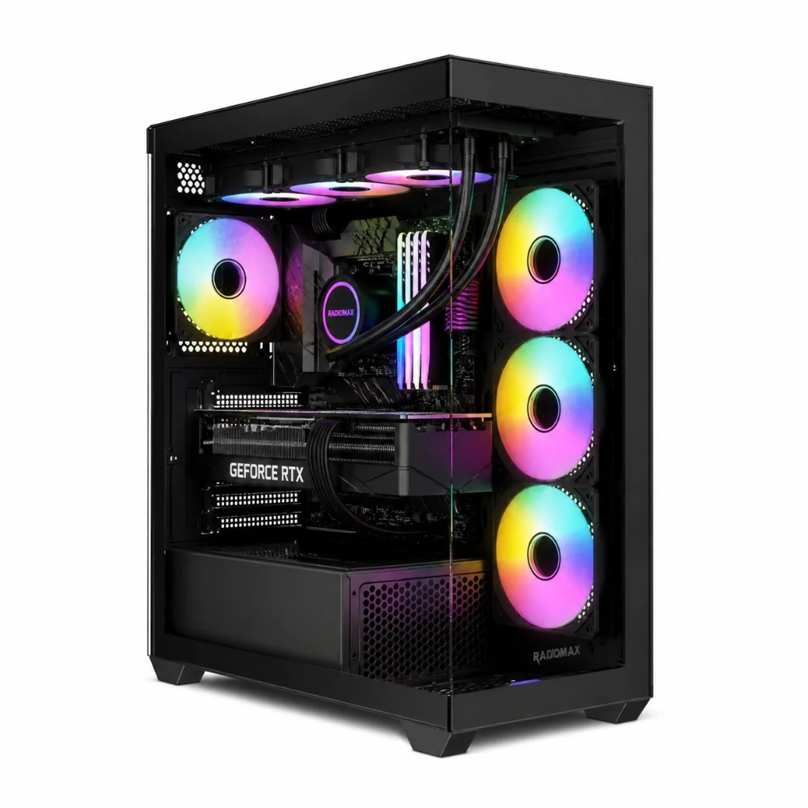
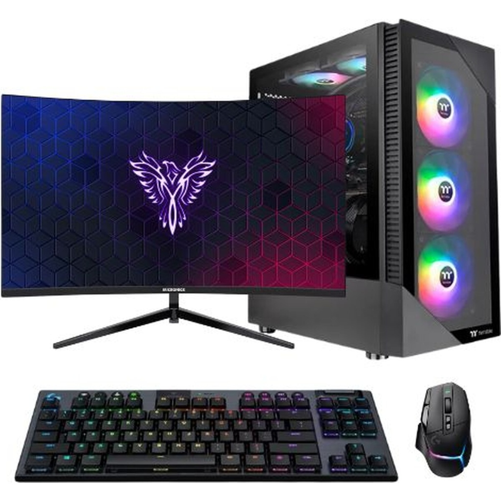
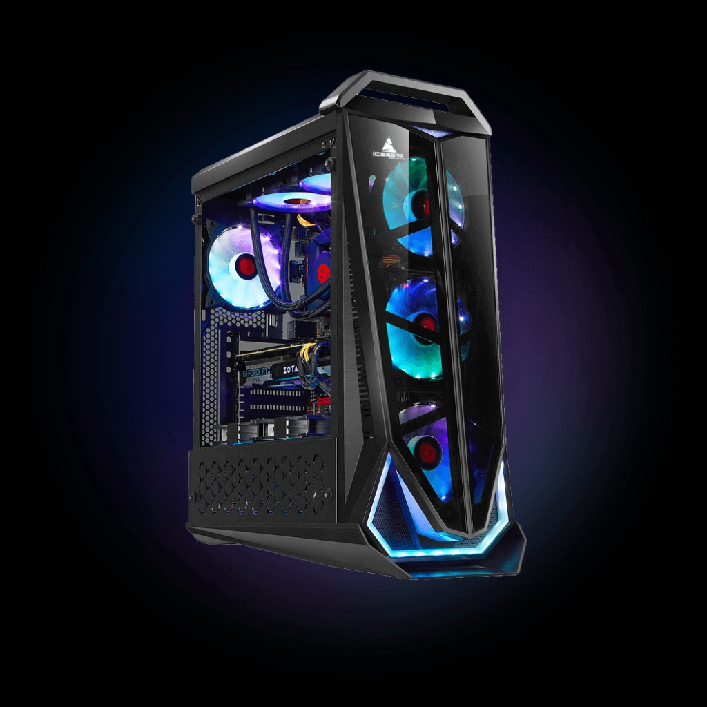
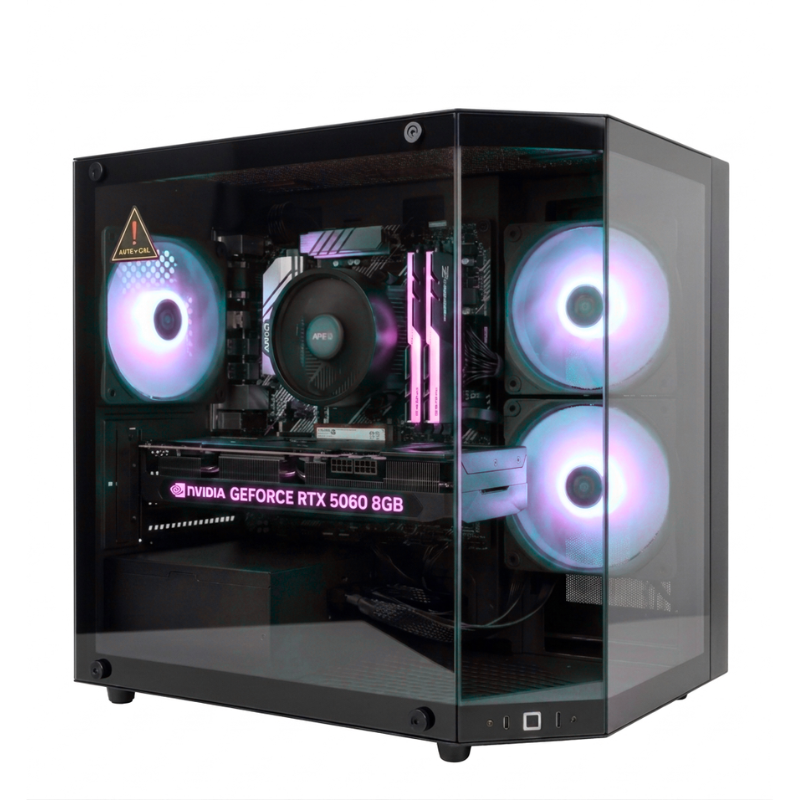

RadioMax Forensics Pro
Refrigeración líquida ARGB, procesador multinúcleo y GPU dedicada para auditorías complejas.
Innovación en Hardware de Alto Rendimiento y Seguridad Digital Integral
En la era digital actual, las tecnologías emergentes como la
computación de alto rendimiento, la inteligencia artificial y el
procesamiento en la nube avanzan a pasos agigantados.
Sin embargo, este crecimiento tecnológico exponencial también
incrementa los vectores de ataque y la sofisticación de las amenazas
cibernéticas sobre empresas y usuarios particulares.
La protección de la infraestructura tecnológica no solo involucra
software defensivo, sino también estaciones de trabajo seguras y
arquitecturas de hardware robustas.
En CyberTech Solutions combinamos equipos de cómputo
de vanguardia con las mejores prácticas de seguridad de la información
para garantizar un entorno confiable, productivo y blindado contra
intrusiones.

Escuche nuestro resumen sonoro sobre cómo blindar su entorno digital corporativo:
Contamos con ensambles optimizados para desarrollo, ciberinteligencia,
renderizado y análisis de datos en tiempo real.
Cada computador cuenta con cifrado por hardware TPM 2.0 y aislamiento
seguro de procesos críticos:

Refrigeración líquida ARGB, procesador multinúcleo y GPU dedicada para auditorías complejas.

Chasis aerodinámico diseñado para estabilidad operativa continua 24/7 en servidores locales.

Equipado con tarjetas gráficas de última generación para cálculo acelerado y machine learning.
Solución periférica completa con monitor panorámico curvo para monitoreo de redes y alertas en vivo.
Para mantener la integridad, confidencialidad y disponibilidad de la
información en estos equipos, es indispensable aplicar controles de
acceso estrictos.
A continuación, presentamos los procedimientos fundamentales de
autenticación y los peligros más frecuentes identificados por
analistas de seguridad:
Para consultar alertas globales y normativas vigentes en seguridad de la información, visite el portal oficial del Instituto Nacional de Ciberseguridad:
Diligencie el siguiente formulario para solicitar cotizaciones de computadores o agendar una consultoría de ciberseguridad con nuestros especialistas: